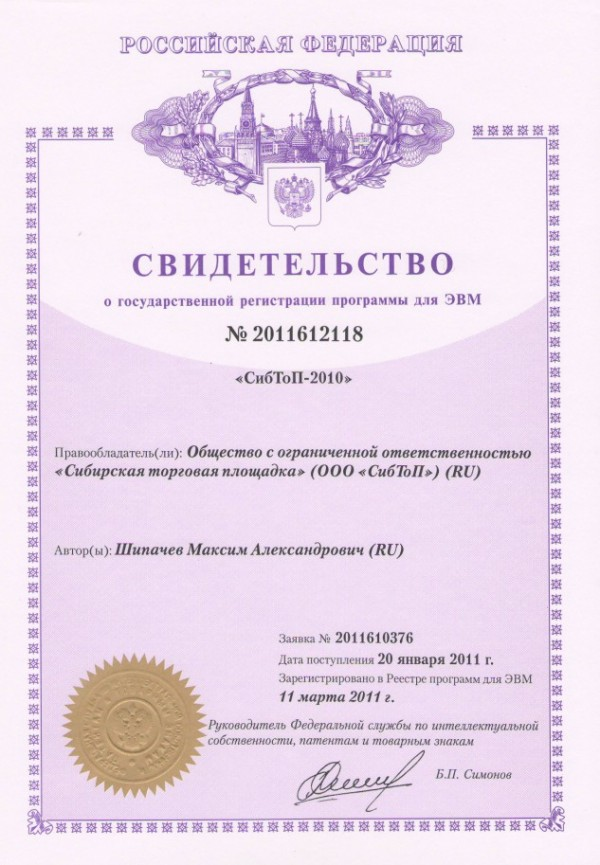

Разработкой сайтов я занимаюсь довольно давно. В PHP конечно на полжизни отстаю от знакомых гуру Ort'a и Redhummer'а, но потихоньку разрабатываю сайты для себя и для окружающих.
В прошлом году по заказу одной из кемеровских компаний делал сайт, предназначением которого является проведение торгов. Торги штука серьёзная, поэтому и с юридической точки зрения всё должно быть на высоте. Заказчик решил, что для высоты стоит зарегистрировать код сайта как программный продукт.
Исполнитель в лице меня никаких возражений не имел, все документы по передаче прав были оформлены. Составлена заявка на государственную регистрацию программы для ЭВМ. Приложены листинги скриптов, написанных мной и характерных для данного сайта.
Вчера получил копию свидетельства о регистрации.

Сама бумажка конечно ничего не значит, ведь даже
<?php echo 'My first program'; ?>
это уже программа, которую теоретически можно зарегистрировать. Но видеть свою фамилию на цветной бумажке с голограммой для подсознания всё равно приятно.